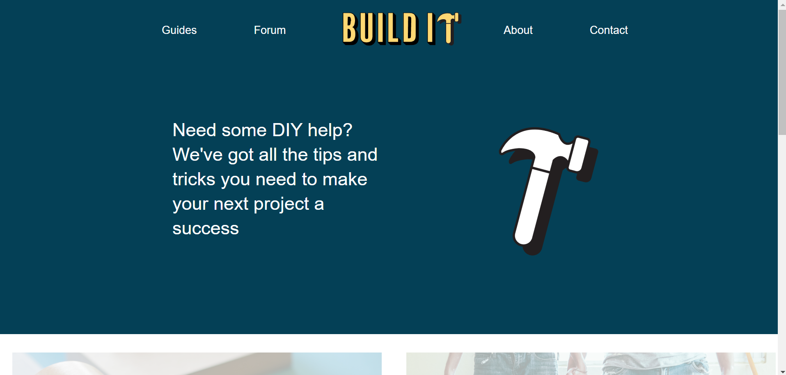

EditorX Tutorial
I did not watch this week's lecture on the basics of EditorX as I am coding my website so I don't need to use it.
Assignment Two Part Two Progress
I started my assignment by setting up all the files for my pages and CSS. I then linked all of the pages to the CSS and added the basic Doctype code.
I decided to begin by working on creating the navigation bar as that is a constant element across all of the pages. I used a grid layout to position the links and logo, which was really effective in getting the spacing correct. I then added the navigation to all of the pages along with a footer, and then created the headers for each page, as they are pretty much the smae across the whole website.
After that, I added the two buttons to the home page and began coding the layout for the carousel - something that I could reuse on my other pages. I have not finished the carousel yet as I am still trying to get the grid layout and sizing right.
I realised part way through coding my home page that I wasn't looking at responsive design yet, as I had been solely coding for desktop view. I went back and watched the video lecture on CSS Grids part two and found that it would have been easier to code for mobile first and work my way up to desktop in order to get the grid system working effectively. As a result, I decided to make a new CSS file and rewrite all of my code using media queries. I am glad I did it at this point as it would have been a much bigger mission if I had coded more pages of my website. I was able to copy and paste a lot of my previous code which meant I wasn't entirely starting from scratch, and I better understand how grids and media queries work now that I have applied them in practice.